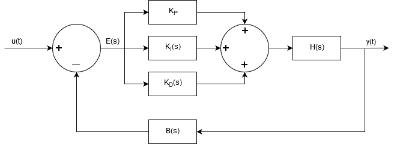

| H(s) | First / Second order process |
| u(t) | input signal |
| y(t): | output signal |
| Control | Steady State Response | Transient Response |
|---|---|---|
| Proportional KP |
Increasing KP reduces steady state error | Increasing KP speeds up response of the system |
| Integral KI |
KI eliminates steady state error | KI use to tune the of dynamics of the transient response |
| Derivative KD |
KD has no effect on steady state error | KD use to tune the dynamics of the transient response |